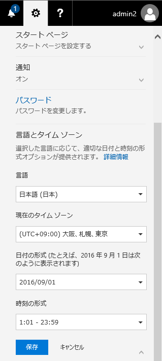
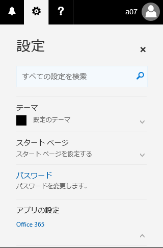
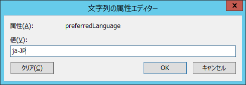

こんにちは。いつも Office 365 を利用いただきまして、ありがとうございます。
今回は、Office 365 での言語設定についてご説明します。
下記の設定が反映される箇所は、Office 365 ポータル / 各種管理センターです。
Office 365 を使用するユーザーは、2 種類があります。
- クラウドユーザー：Office 365 上で作成したユーザー
- ディレクトリ同期ユーザー：オンプレミス AD で作成後、ディレクトリ同期によって Office 365 上に同期されたユーザー
それぞれのユーザーについて、Office 365 で使用する言語の設定方法は下記の通りです。
1. クラウドユーザー
「言語とタイムゾーン」にて設定する言語が使用されます。{kind=link}

2. ディレクトリ同期ユーザー
ディレクトリ同期ユーザーの場合、クラウドユーザーのような「言語とタイムゾーン」設定項目がありません。 既定では、ブラウザの言語設定が Office 365 においても使用される動作となっています。{kind=link}

ユーザーが使用しているブラウザーの言語設定に依存せずに、Office 365 を使用するときは必ず「日本語」を使用するように設定するには、
オンプレミス AD 側で対象ユーザーの PreferredLanguage 属性の値を ja-JP に設定し、ディレクトリ同期を実施します。
ディレクトリ同期が完了しますと、Office 365 側でもユーザーの PreferredLanguage 属性値が ja-JP となります。
{kind=link}

Office 365 側の確認方法は、下記の通りです。
> Get-MsolUser -UserPrincipalName testuser@contoso.onmicrosoft.com | fl
LastDirSyncTime : 2017/06/29 6:54:24
ImmutableId : ZmfNKSV/gUu9PMAmXH3Stg==
PreferredLanguage : ja-JP ＜＜＜こちらを確認します。
UserPrincipalName : testuser@contoso.onmicrosoft.com
UserType : Member
ValidationStatus : Healthy
WhenCreated : 2017/06/21 1:51:41
2018 年4 月追記：
セキュリティ/コンプライアンスセンター（SCC）につきましては、PreferredLanguage 属性値が空白の場合、
ブラウザの言語設定に依存せず既定値である「英語」で表示されます。
SCC を日本語で表示させるには、PreferredLanguage 属性値を ja-JP に設定していただく方法が有効となりますので、
クラウドユーザー / ディレクトリ同期ユーザーそれぞれの手順にて設定を実施ください。
- 参考情報
Office 365 で言語および地域を設定する方法
URL：https://support.microsoft.com/ja-jp/help/4018959/how-to-set-language-and-region-settings-for-office-365
ロケール ID (LCID) の一覧
URL：https://msdn.microsoft.com/ja-jp/library/cc392381.aspx